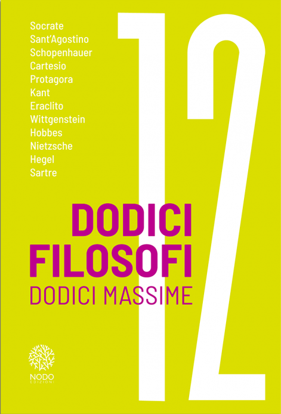
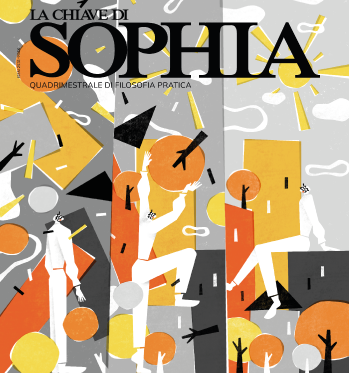
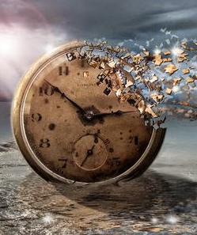
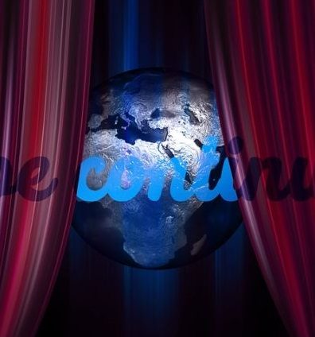
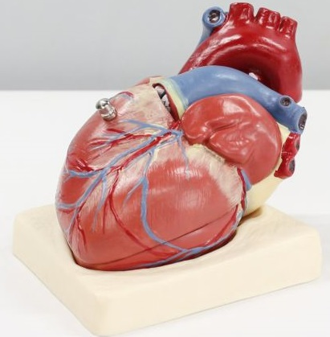
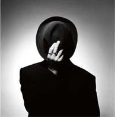
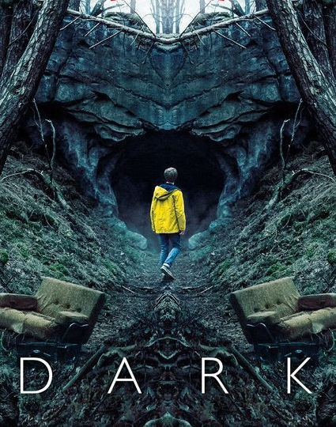
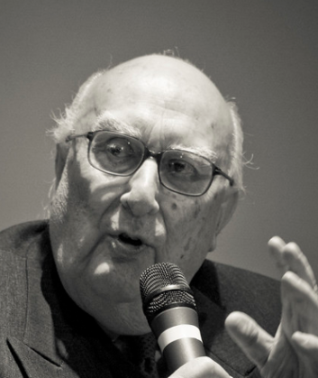

Francesca Plesnizer
Insegnante e redattrice culturale.
Scrivo per: @chiavesophia,
@nodoedizioni,
@chartasporca
.
Scrivo di:
filosofia, serie tv, cinema, libri. Talvolta scrivo racconti.

The Bear: Gettare il cuore oltre l'ostacolo. Una recensione di parte.
Charta Sporca
Natalia Ginzburg e le piccole grandi virtù che ci permettono di essere
La Chiave di Sophia
Incomunicabilità: tra crossroads di Franzen e Gorgia
La Chiave di Sophia

Dodici Filosofi
Dodici Massime
Dodici Massime
Nodo Edizioni | Con un mio saggio "L'uomo è misura di tutte le cose"

In Metamorfosi
La chave di Sophia #20
La chave di Sophia #20
Nodo Edizioni
"Il Signore delle formiche" di Gianni amelio:
chi sono i veri mostri?
chi sono i veri mostri?
Charta Sporca

Quando la memoria
spezza l'Io:
tra Aristotele ed Ernaux
spezza l'Io:
tra Aristotele ed Ernaux
La Chiave di Sophia

Il bisogno di rifare:
reboot, remake e sequei
reboot, remake e sequei
La Chiave di Sophia

Intrudere ed estrudere: l'inaccettabile opposizione di Jean-Luc-Nancy
La Chiave di Sophia
Scarlett O'Hara e l'elogio del qui ed ora
La Chiave di Sophia
Il bisogno di contatto:
scuola e pandemia
scuola e pandemia
La Chiave di Sophia
Malcom&Marie: il cinema ai tempi della pandemia
Mangiatori di Cervello

Esssere un uomo, essere una donna: la ricetta di Philip Roth per la vita adulta
Charta Sporca
Scoprire e ritrarre:
il soggetto esposto e problematicizzato
il soggetto esposto e problematicizzato
La Chiave di Sophia
L'uomo etico di Philip Roth:
scelta e predestinazione
scelta e predestinazione
La Chiave di Sophia
I'm thinking of ending things: interiorità e temporalità sullo schermo
Mangiatori di Cervello
Il Mercato coperto della carne, i cavalli e il panetto di burro
Charta Sporca

Dark ovvero l'epica contemporanea
Mangiatori di Cervello

La filosofia pratica che Camilleri ci lascia in eredità
La Chiave di Sophia
Rileggere Platone ai tempi di Covid: il mito del carro alato
La Chiave di Sophia
Esperire la cattedrale:
tra carver e Notre-Dame
tra carver e Notre-Dame
Charta Sporca
Su Stoner e Socrate: riflessioni tra vita pubblica e privata
La Chiave di Sophia
Vivian Maier:
L'autoritratto come affermazione
L'autoritratto come affermazione
Charta Sporca
Gli audiolibri e la dimenticata arte dell'ascolto
Charta Sporca
La sostenibile leggerezza del leggere: elogio alla lettura leggera
Mangiatori di Cervello